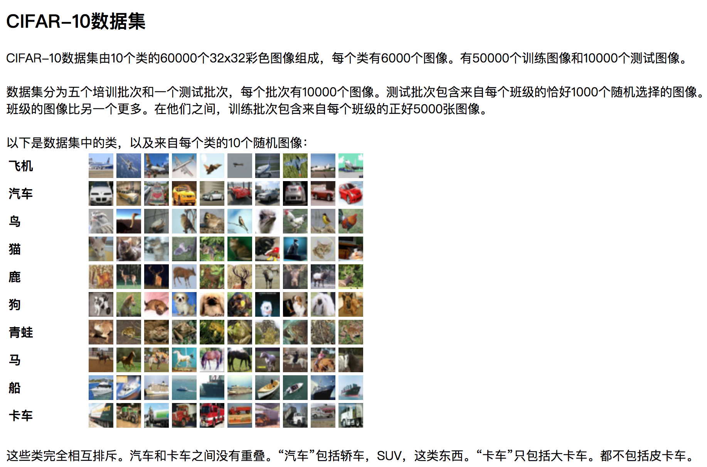

二进制数据
学习目标
- 目标
- 应用tf.FixedLengthRecordReader实现二进制文件读取
- 应用tf.decode_raw实现解码二进制数据
- 应用
- CIFAR10类图片数据读取
1、CIFAR10二进制数据集介绍

https://www.cs.toronto.edu/~kriz/cifar.html
- 二进制版本数据文件
二进制版本
二进制版本包含文件data_batch_1.bin，data_batch_2.bin，...，data_batch_5.bin以及test_batch.bin
。这些文件中的每一个格式如下，数据中每个样本包含了特征值和目标值：
<1×标签> <3072×像素>
...
<1×标签> <3072×像素>
第一个字节是第一个图像的标签，它是一个0-9范围内的数字。接下来的3072个字节是图像像素的值。前1024个字节是红色通道值，下1024个绿色，最后1024个蓝色。值以行优先顺序存储，因此前32个字节是图像第一行的红色通道值。 每个文件都包含10000个这样的3073字节的“行”图像，但没有任何分隔行的限制。因此每个文件应该完全是30730000字节长。
2、CIFAR10 二进制数据读取
2.1 分析
- 构造文件队列
- 读取二进制数据并进行解码
- 处理图片数据形状以及数据类型，批处理返回
- 开启会话线程运行
2.2 代码
- 定义CIFAR类
class CifarRead(object):
"""
二进制文件的读取，tfrecords存储读取
"""
def __init__(self):
# 定义一些图片的属性
self.height = 32
self.width = 32
self.channel = 3
self.label_bytes = 1
self.image_bytes = self.height * self.width * self.channel
self.bytes = self.label_bytes + self.image_bytes
- 实现读取数据方法read_and_decode(self, file_list)
def read_and_decode(self, file_list):
"""
读取二进制原始数据，解码成张量
:return:
"""
# 1、找构造文件队列
file_queue = tf.train.string_input_producer(file_list)
# 2、使用二进制读取器读取内容
# 一共读取1+3072=3073个字节
reader = tf.FixedLengthRecordReader(self.bytes)
# 此时的value是某个文件的某个样本
key, value = reader.read(file_queue)
# 3、二进制数据解码 decode_raw
label_image = tf.decode_raw(value, tf.uint8)
print(label_image)
# 把图片的特征值和目标值单独拿出来处理
# tf.slice切片
label = tf.slice(label_image, [0], [self.label_bytes])
image = tf.slice(label_image, [self.label_bytes], [self.image_bytes])
# 标签、图片的类型转换、形状转换
label_cast = tf.cast(label, tf.int32)
# 设置图片的特征值形状
# 使用reshape去修改形状
# 图片特征值的数据，如果用于去训练计算，可以转换成float32类型
image_reshape = tf.reshape(image, [self.height, self.width, self.channel])
print(label_cast, image_reshape)
# 4、批处理图片数据
image_batch, label_batch = tf.train.batch([image_reshape, label_cast], batch_size=10, num_threads=1, capacity=10)
return image_batch, label_batch
- 会话逻辑
if __name__ == "__main__":
# 生成路径+文件名的列表
filename = os.listdir(FLAGS.cifar_datadir)
# 路径+名字拼接
file_list = [os.path.join(FLAGS.cifar_datadir, file) for file in filename if file[-3:] == "bin"]
# 实例化类
cr = CifarRead()
# 从原始二进制文件读取
# image_batch, label_batch = cr.read_and_decode(file_list)
# 从tfrecords文件读取数据
image_batch, label_batch = cr.read_tfrecords()
# 开启会话打印内容
with tf.Session() as sess:
# 创建线程协调器
coord = tf.train.Coordinator()
# 开启子线程去读取数据
# 返回子线程实例
threads = tf.train.start_queue_runners(sess=sess, coord=coord)
# 获取样本数据去训练
print(sess.run([image_batch, label_batch]))
# 存入数据
# cr.write_to_tfrecords(image_batch, label_batch )
# 关闭子线程，回收
coord.request_stop()
coord.join(threads)